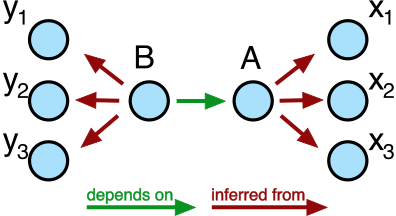
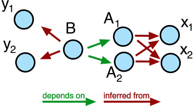
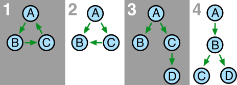
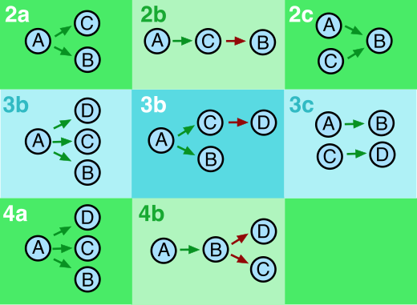
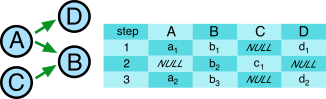
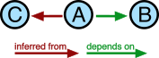
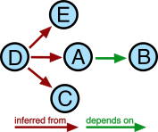
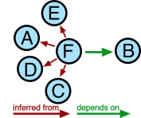

Interdependent Parameters
Introduction
At the heart of a measurement lies the concept of dependent and independent variables. A physics experiment consists in its core of varying something and observing how something else changes depending on that first varied thing. For the QCoDeS dataset to be a faithful representation of actual physics experiments, the dataset must preserve this notion of dependencies. In this small note, we present some thoughts on this subject and present the current state of the dataset.
Setting the general stage
In the general case, an experiment looks as follows. We seek to study how \(B\) depends on \(A\). Unfortunately, we can neither set \(A\) nor measure \(B\). What we can do, however, is to vary \(n\) parameters \(x_1,x_2,\ldots,x_n\) (\(\boldsymbol{x}\) for brevity) and make the assumption that \(A=A(\boldsymbol{x})\). Similarly, we have access to measure \(m\) other parameters, \(y_1,y_2,\ldots,y_m\) (\(\boldsymbol{y}\) for brevity) and assume that \(B=B(\boldsymbol{y})\). It generally holds that each \(y_i\) depends on \(\boldsymbol{x}\), although many such dependencies may be trivial [1]. Given \(\boldsymbol{x}\) and \(\boldsymbol{y}\) (i.e. a laboratory) it is by no means an easy exercise to find a relation \(A(B)\) for which the above assumptions hold. That search is indeed the whole exercise of experimental physics, but as far as QCoDeS and the dataset is concerned, we must take for granted that \(A\) and \(B\) exist and satisfy the assumptions.
Good scientific practice and measurement intentions
In this section, we assume \(A\) and \(B\) to be scalars. We treat the general case in the next section.
In a measurement of \(B\) versus \(A\), it seems tempting to simply only write down the values of \(A\) and \(B\), declare that \(A\) is abscissa for \(B\), and make a nice plot. Responsible scientific conduct principles however urge us to write down everything we did, which in terms of data saving amounts to also storing \(\boldsymbol{x}\) and \(\boldsymbol{y}\). At the same time, we would like the dataset to reflect the intention of measurement, meaning what the measurement is supposed to be about, namely that it measures \(B\) versus \(A\). Currently, this is handled by the dataset by declaring that \(B\) depends on \(A\) whereas \(A\) is inferred from \(\boldsymbol{x}\) and \(B\) is inferred from \(\boldsymbol{y}\). In code, we set up the measurement like
meas = Measurement()
meas.register_parameter(x1)
meas.register_parameter(x2)
meas.register_parameter(x3) # and so on
meas.register_parameter(y1)
meas.register_parameter(y2)
meas.register_parameter(y3) # etc
meas.register_parameter(A, inferred_from(x1, x2, x3))
meas.register_parameter(B, depends_on=(A,),
inferred_from=(y1, y2, y3))
This is shown graphically in Fig. 2.
{kind=link}

Fig. 2 A drawing of the general setting
The default plotter included in the dataset will understand the dependencies and plot \(B\) versus \(A\).
Higher dimension
In the previous section, \(A\) was to assumed to be a scalar. In the general case, the true independent variables \(\boldsymbol{x}\) can be grouped together in \(k\) different variables, \(A_1,\ldots,A_k\) that represent the intention of the measurement. An example would be a heatmap plotting a demodulated signal as a function of two gate voltage axes. To describe a measurement of \(B\) as \(A_1\) and \(A_2\) are varied, we set up the measurement like
meas = Measurement()
meas.register_parameter(x1)
meas.register_parameter(x2) # and so on
meas.register_parameter(y1)
meas.register_parameter(y2) # etc
meas.register_parameter(A1, inferred_from(x1, x2))
meas.register_parameter(A2, inferred_from(x1, x2))
meas.register_parameter(B, depends_on=(A1, A2),
inferred_from=(y1, y2))
Graphically:
{kind=link}

Fig. 3 A heatmap
It may of course very well be that e.g. \(A_1=x_1\) in which case there is no point of having inferred parameter for \(A_1\).
Is that really necessary?
It should be clear that the inferred_from notion is a kind of
metadata. It describes a relation between the raw values that the
experimentalist can control and the desired outcome of an experiment. It
is not required by the dataset to have any inferred variables, but
we stress that it is unscientific to throw away raw measurement data.
Whatever raw values are recorded should thus be saved along with the
“interesting” parameter values, and the inferred_from tagging is
simply a way of declaring what is derived from where.
In a perfect world, an auxiliary laboratory notebook contains all the information needed to exactly reproduce the experiment, and the dataset needs only store the numerical values of parameters and nothing else. In a sort of pragmatic recognition of how actual laboratories usually work, we have decided to put some metadata directly into the dataset. Specifically, we want the dataset to be able to hold information about
What the experimenter wishes to study as a function of what (expressed via
depends_on).What corresponds to a raw machine setting/reading (expressed via
inferred_from).
As complexity of the experiments grow, the second notion can be difficult to uphold. It is offered as a help to ensure good scientific practice.
It is important to note that the dataset can freely be used without any declarations of dependencies of either sort.
Plotting
Besides being optional metadata describing the correct interpretation of
measurement data, the direct dependencies (expressed via depends_on)
are used to generate the default plot. We estimate that for the vast
majority of measurements to be stored in the dataset, the
experimentalist will want to be able to plot the data as they are coming
in and also have the ability to quickly bring up a plot of a particular
measurement without specifying more than the id of said measurement.
This necessitates the declaration, in the dataset itself, of what should
be plotted against what. The direct dependencies can thus be understood
in the following way: \(A\) depends on \(B\) and \(C\) means
that the default plot is of \(A\) with \(B\) on one axis and
\(C\) on the other.
Although visual plotting is not tractable for an arbitrary amount of axes, we promote the principle of having a default plot to be a logical principle about which dependencies we allow: only those resulting in a meaningful (perhaps \(N\)-dimensional) default plot are allowed.
All possible trees
Now that we have established a language for describing connections between parameters, and also described our aim in terms of plotting and metadat, let us review what the dataset does and does not allow.
It follows from the consideration of section Plotting that the dataset allows for a single layer of direct dependencies. The trees shown in Fig. 4 are therefore all invalid and can not be stored in the dataset.
{kind=link}

Fig. 4 Not acceptable direct dependencies
A few words explaining why are in place.
Circular dependence. There is no way of telling what is varied and what is measured.
Independent parameters not independent. Although \(A\) clearly sits on top of the tree, the two independent variables are not independent. It is not clear whether \(C\) is being varied or measured. It is ambiguous whether this describes one plot of \(A\) with \(B\) and \(C\) as axes or two plots, one of \(A\) versus \(B\) and another of \(C\) versus \(B\) or even both situations at once.
Similarly to situation 2, \(C\) is ill-defined.
\(B\) is ill-defined, and it is not clear what \(A\) should be plotted against.
It is perhaps instructive to see how the above trees could be remedied. In Fig. 5 we show all possible valid reconfigurations that neither invert any arrows nor leave any parameters completely decoupled [2]. The fact that each tree of Fig. 4 has several valid reconfigurations exactly illustrates the ambiguity of those trees [3].
In column c of Fig. 5 we see two somewhat new graphs. In 2c, we allow two variables to depend on a third one. There is no ambiguity here, two plots will result from this measurement: \(A\) versus \(B\) and \(C\) versus \(B\). Similarly, in 3c we’ll get \(A\) versus \(B\) and \(C\) versus \(D\). The total number of trees and plots per dataset is treated in the next section.
{kind=link}

Fig. 5 Acceptable recastings of the dependencies of Fig. 4. The pathological tree 1 is omitted.
Number of trees per dataset
The dataset can hold an arbitrary number of “top-level” parameters, meaning parameters with arrows only going out of them, parameters on which nothing depends. At each step of the experiment, all parameters that such a top-level parameter points to must be assigned values, if the top-level parameter gets assigned a value. Otherwise, they may be omitted. What this means in practice is illustrated in Fig. 6.
{kind=link}

Fig. 6 A more complex sweep example. The blue rectangles represent the results table in the database.
We may say that this dataset de facto contains two trees, one \(A-B-D\) tree and one \(C-B\) tree [4] . One dataset can hold as many such trees as desired. In code, Fig. 6 might take the following form:
meas = Measurement()
meas.register_parameter(D)
meas.register_parameter(B)
meas.register_parameter(A, depends_on=(B, D))
meas.register_parameter(C, depends_on=(B,))
with meas.run() as datasaver:
for b_val in b_vals:
for d_val in d_vals:
B.set(b_val)
D.set(d_val)
a_val = A.get()
datasaver.add_result((A, a_val),
(B, b_val),
(D, d_val))
c_val = C.get()
datasaver.add_result((C, c_val),
(B, b_val))
A few examples
Finally, to offer some intuition for the dataset’s dependency structure, we cast a few real-life examples of measurements into tree diagrams.
Conductance measurement
In a conductance measurement measuring conductance as a function of gate voltage, a gate voltage, \(V_\text{gate}\), is swept while a lock-in amplifier drives the DUT at a certain frequency with a drive amplitude \(V_\text{drive}\). The drive induces a current which oscillates at the drive frequency. An I-V converter converts that oscillating current back into an oscillating voltage (which a certain gain factor, \(G_{IV}\), with units \(A/V\)), and that voltage is fed back into the lock-in. Assuming no phase shift, the lock-in amplifier’s \(X\) reading is then related to the conductance, \(g\), according to
The corresponding parameter tree is shown in Fig. 7, where \(A\) is \(g\), \(B\) is \(V_\text{gate}\), and \(C\) is \(X\). One could of course argue that \(V_\text{drive}\) and \(G_{IV}\) should also be parameters that \(g\) is inferred from. We suggest the following rule: anything that is known beforehand to remain constant throughout the entire run can be omitted from the dataset and written down elsewhere [5]. The converse also holds: anything that does change during a run really should be saved along.
{kind=link}

Fig. 7 Conductance measurement.
Compensatory sweeping
An interesting example that potentially does not fit so nicely into our scheme is offered by compensatory sweeping. A voltage, \(V_1\) is swept and a quantity \(S\) is measured. Since sweeping \(V_1\) has some undesired effect on the physical system, a compensatory change of another voltage, \(V_2\) is performed at the same time. \(V_2\) changes with \(V_1\) according to
Since both \(\alpha\) and \(\beta\) might change during the run via some feedback mechanism, we have four parameters apart from \(S\) to sort out.
There are two ways to go about this.
Decoupling
If the experimentalist really insists that the interesting plot for this measurement is that of \(S\) versus \(V_1\) and the compensation is just some unfortunate but necessary circumstance, then the unusual tree of Fig. 8 is the correct representation.
{kind=link}

Fig. 8 Sweeping a voltage with compensation in the background. \(A\) is \(V_1\), \(B\) is \(S\), \(D\) is \(V_2\), \(C\) is \(\alpha\), and \(E\) is \(\beta\).
The tree of Fig. 8 does fit into the scheme of Fig. 2, the scheme we promised to represent the most general setting. There are now two possibilities. Either we were initially wrong and no dependencies save for those specifying the default plot can be defined for this measurement. Else the experimentalist is wrong, and has an untrue representation of the experiment in mind. We explore that idea in below in Restructuring.
Restructuring
If the space spanned by \(V_1\) and \(V_2\) has a meaningful physical interpretation [6], it might make more sense to define a new parameter, \(V_3\) that represents the path swept along in that space. After all, this is what is \(physically\) happening, \(S\) is measured as a function of \(V_3\). Then the tree of Fig. 9 emerges.
{kind=link}

Fig. 9 Sweeping along a path in voltage space. \(A\) is \(V_1\), \(B\) is \(S\), \(D\) is \(V_2\), \(C\) is \(\alpha\), \(E\) is \(\beta\), and \(F\) is \(V_3\).